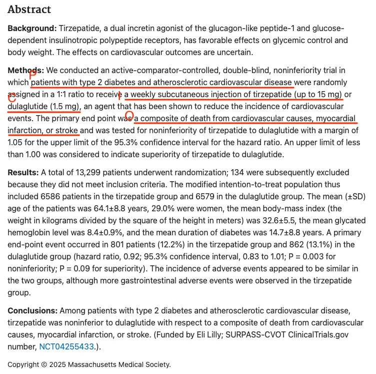
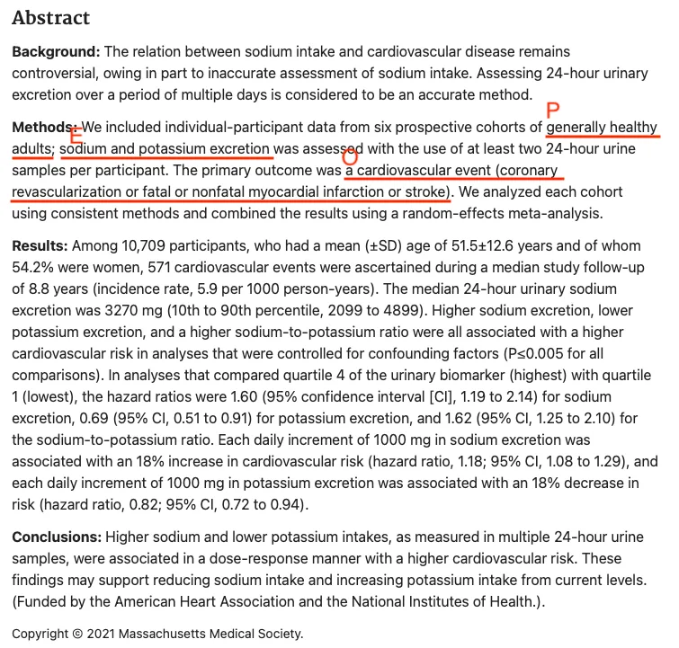

零、系列導言
在之前一個系列「讀懂健康研究的證據思維」中，我們用了許多實際的健康新聞作為例子，練習了大眾該有的流行病學觀。
而本系列「流行病學方法教學」中，我們將從醫學生/醫師/醫療專業人員/研究人員的角度出發，用相當長的篇幅，盡可能地將常用的流行病學內容分享進來。雖然流行病學的知識廣袤無邊，我們透過這一個系列，應該可以讓有興趣學習的大家獲得足夠的理解。
這個系列大致會沿著一條動線走：先從研究問題與基本量測開始（怎麼把一個模糊的臨床或公衛問題，轉換成可以被資料回答的形式），接著進入研究設計與臨床流行病學問題（不同的研究設計分別在回答什麼樣的問題），然後談偏誤與效度（研究結果什麼時候可信、什麼時候不可信），再進入因果推論框架與觀察性研究的因果推論方法（怎麼從「有關」走向「因果」），最後以證據整合與臨床建議收尾（單一研究的結果，怎麼變成我們可以依循的臨床指引）。
不需要照順序閱讀——每一篇都會盡量獨立成篇，讀懂當下這篇不必先讀過前面所有內容。但如果你是想有系統地建立起完整的流行病學方法架構，還是會建議照順序讀下去，因為後面的篇章，會建立在前面已經介紹過的概念之上。
一、為什麼我們需要PICO/PEO
當我們在進行流行病學研究的時候，最重要的第一步驟應該就是讓別人聽得懂你想問什麼。新聞標題或是口頭對話中，時常侷限於易讀性或是便宜行事，沒辦法科學化地將研究概念傳達清楚。
在流行病學上，我們常用PICO/PEO架構來處理把議題說清楚的這個問題。可以想像他就是一個制式化的合約，問題的哪一個層面要關注什麼重點，都會依照這個形式列舉清楚。
二、PICO與PEO的定義
PICO
我們先談PICO，他最常用於有介入性的研究當中。
- P: Population / Patients（族群 / 患者）
- 此處看的是該研究在什麼族群上給予介入並觀測結局。
- 例如：18-80歲成人、保留射出分率型心臟衰竭（HFpEF）病患、第二型糖尿病（T2DM）的成年男性患者、⋯等等
- I: Intervention（介入）
- 我們對於上述族群給予什麼樣的介入措施
- 例如：每週1小時高強度營養衛教、每週皮下注射Semaglutide（一種GLP-RA類藥物）、每天4mg Rosiglitazone（一種TZD類藥物）外加運動處方、⋯等
- C: Comparator（對照）
- 在同個研究中不是被分配到介入組的另外一群受試者，接受的怎麼樣的對照處置
- 例如：安慰劑（Placebo）、假處理（Sham）、或是另一種治療方式（active comparator）、⋯等
- O: Outcome（結局）
- 研究中想觀察或解釋的結果變項
- 例如：第二型糖尿病發生、死亡、主要不良心血管事件（major adverse cardiovascular event, MACE）、腎絲球過濾率估計值（eGFR）下降幅度、降血壓藥物減少數、⋯等
PEO
PEO架構則是較適合用在觀察性研究，因為研究者沒有主動給予「介入」，其中P和O的概念同PICO中的對應項目，我們只說E。
- E: Exposure（暴露）
- 在 outcome 發生之前，任何可能影響 outcome 的因素、狀態、行為或介入，稱之為暴露。
- 例如：飲食分數、BMI、CKM stage
三、舉例說明如何尋找PICO/PEO
我們以這兩篇文章來試圖找尋研究的PICO/PEO，從Abstract從其實已可略知一二。
PICO之例：SURPASS-CVOT Trial

- P: “Patients with type 2 diabetes and atherosclerotic cardiovascular disease”
- I: “A weekly subcutaneous injection of tirzepatide (up to 15 mg)”
- C: “Dulaglutide (1.5 mg)”（注意，此處即為active comparator design）
- O: “Composite of death from cardiovascular causes, myocardial infarction, or stroke”（僅列出主要結局，原研究仍有列出其他關注結局）
PEO之例：24-Hour Urinary Sodium and Potassium Excretion and Cardiovascular Risk

- P: “Generally healthy adults”
- E: “24-hour urinary sodium and potassium excretion”
- O: “Cardiovascular event (coronary revascularization or fatal or nonfatal myocardial infarction or stroke)”
四、常見誤解
PEO沒有C，是不是少了一個要素？
這是這篇系列文章裡最容易被問的問題。PEO架構本身確實不像PICO一樣有獨立列出的Comparator，但這不代表觀察性研究不需要「比較」——比較其實內建在Exposure的定義方式裡。像我們在上一段舉的24小時尿液鈉/鉀排泄量例子，E本身是連續變項，研究看的是「排泄量越高，風險怎麼變化」的劑量反應關係，比較就藏在這條曲線裡，不需要另外切出一組「未暴露組」當對照。如果E是類別變項（例如「有無服用某藥物」），比較同樣是內建在E的分類方式裡（服用 vs. 未服用）。這也是為什麼PEO跟PICO在架構上看起來少一項，但實際上不影響它回答問題的完整性。
只寫暴露和結果，卻沒說清楚Population的定義
很多人會把P簡化成一句籠統的描述（例如「成人」），但「Target Population」（我們最終想推論的對象）跟「Study Population」（實際被研究、抽樣進來的對象）常常不是同一群人。這個落差之後會有專篇（研究對象從哪裡來：Target Population、Source Population 與 Study Population）仔細展開，這裡先埋個伏筆。
追蹤要從哪一天開始算，PICO/PEO本身不會告訴你
即使P/I(E)/C/O都定義清楚了，觀察性研究還有一個PICO/PEO架構沒有直接處理的問題：追蹤該從哪一天開始算（Time Zero）。這個問題如果沒處理好，會直接影響研究結果的可信度（後面會提到的immortal time bias幾乎都源自這裡），我們會在後面的專篇仔細展開，這篇先知道有這個問題存在就好。
五、怎麼在論文裡讀到這個概念
讀一篇論文時，摘要通常已經濃縮了完整的P/I(E)/C/O骨架（就是我們在第三段示範的做法）。但摘要畢竟是精簡過的版本，真正的操作型定義要回到內文的Methods才看得到：
- P：對應Methods裡的「Study Population」「Participants」或「Eligibility Criteria」，看的是具體的納入／排除條件，而不是摘要裡那句籠統描述
- I / E：RCT會有獨立的「Intervention」段落寫清楚劑量、頻率、給藥方式；觀察性研究則要找「Exposure Assessment」，看暴露是怎麼被測量出來的（例如自填問卷、生物標記、健保處方紀錄）
- C：RCT通常會清楚寫出對照組的處置；觀察性研究的「比較」則可能藏在模型設定裡（例如Reference Category是什麼），不一定會有獨立段落
- O：找「Outcome Ascertainment」或「Endpoints」，通常會分Primary/Secondary Outcome，也會說明結果怎麼被判定（例如是否有adjudication committee、用什麼ICD code定義）
一個實用的閱讀習慣是：先用摘要快速抓出 PICO/PEO 的骨架，再回到Methods確認這四個要素有沒有清楚的操作型定義。如果某個要素在全文都講得模糊（例如只寫「高風險病人」卻沒說納入條件），這往往就是研究品質或外推性的警訊。
六、結語
不管是剛開始接觸論文閱讀，或是在規劃自己的研究，PICO/PEO 是最容易把握研究設計重點的架構，而在討論自己的研究設計時，也可以利用PICO/PEO 架構幫助溝通，大家可以多加練習。
把一個模糊的臨床或公衛問題拆解成 PICO/PEO，等於已經把問題翻譯成一份可以被資料回答的合約——這是所有研究設計的起點。